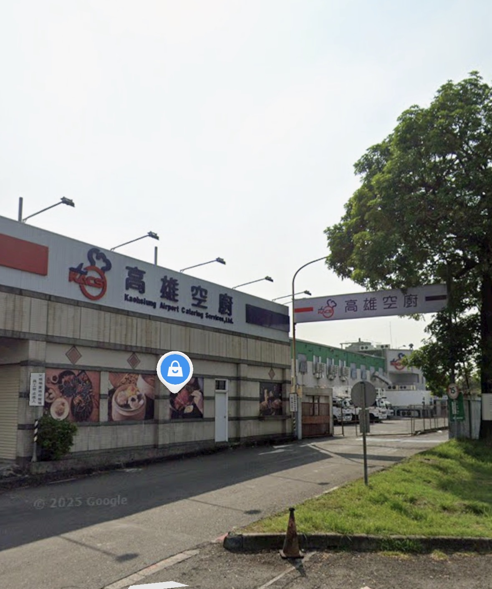

藍色按鈕／電話列皆可點擊。手機可直接撥打電話。
塔台出入口（鐵門）

請以 Google Maps「塔台出入口（鐵門）」為準。照片用於現場辨識；抵達後於鐵門外等待塔台人員帶領。
塔台放行，飛手可於 05:42 起飛，請於 06:09 前落地。落地後請立即回報群組。
若肚子餓，可至地下室餐廳用餐。
| 日期 | 115 年 5 月 16 日 | 協調人員 | 王範例 | ||||
| 單位名 | 偲愷動力股份有限公司 | 降落需時 | 1.5 分 | ||||
| 公告號碼 EX：U2339 | 地點 | 航管指示時間（本地時） | 實際時間（本地時） | 一次作業需時 | 5 分 | ||
| 起 | 落 | 起 | 落 | ||||
| U0843 | 高雄市苓雅區 | 05:42 | 06:09 | 05:43 | 06:10 | ||
| 〃 | 〃 | 05:42 | 06:47 | 06:11 | 06:35 | ||
| 〃 | 〃 | 05:42 | 06:49 | 06:40 | 06:46 | ||
| 用途 | 時間 | 聯絡單位 | 電話 |
|---|---|---|---|
| 協調員到場 | 依申請進場時間整點 | 塔台出入口聯絡 | ☎ 點我撥打 07-8057108 |
| 飛手起飛前通報 | 00:00 ～ 06:30 | 高雄國際機場航務組 | ☎ 點我撥打 07-8057556 |
| 飛手起飛前通報 | 06:30 ～ 23:59 | 高雄國際機場無人機辦公室 | ☎ 點我撥打 07-8018910 |